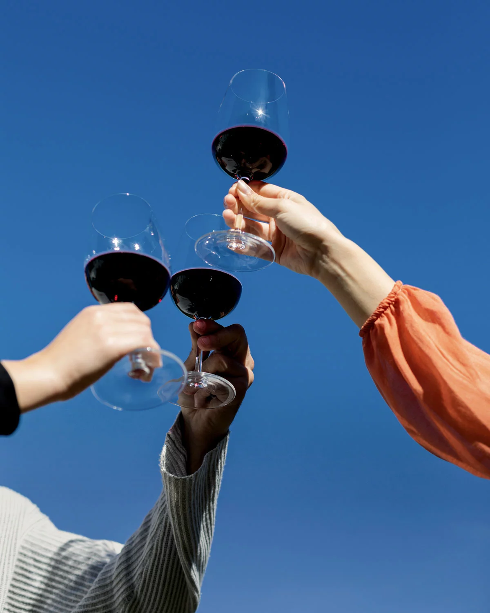

Oltre 60 Anni di Passione Cooperativa
Il Gruppo Caviro nasce nel 1966 dalla visione di alcuni viticoltori che decisero di unire le forze per valorizzare i frutti della propria terra.
Oggi, con oltre 36.200 ettari vitati e 11.500 viticoltori soci, siamo la più grande cantina d'Italia. Esportiamo in più di 80 paesi, portando la qualità e la tradizione del vino italiano sulle tavole di tutto il mondo.
La nostra storia continua
"Questo libro raccoglie oltre 50 anni di vita della nostra impresa cooperativa"
Leggi il libro di Caviro
La Nostra Vision
Coltivare futuro. Insieme, ogni giorno.
Vogliamo essere un modello cooperativo di riferimento nel mondo del vino, capace di democratizzare la qualità e rendere il settore più sostenibile e solido per le generazioni future. Crediamo in un ecosistema vitivinicolo che genera risorse e crea valore condiviso nel lungo periodo.
La Nostra Mission
Creare valore condiviso.
Siamo una filiera cooperativa vitivinicola integrata. Operiamo con un modello circolare e responsabile che garantisce equità ai produttori, solidità al mercato e il miglior rapporto qualità-prezzo ai consumatori, nel pieno rispetto di persone, ambiente e comunità.